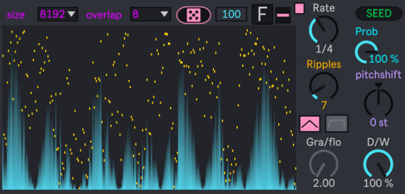

Experience
I have no working experience...(so sorry about that) but I've been studying Max/MSP around 6 years,at least.
Education
almost all Max/MSP/Jitter things learned from myself. and from Youtube videos of course.
Video showcases
sound design with glitchbox sample in gen~ video showcase
spectral sound design with jitter video series
ambient loop with mc.gen~
" frameborder="0" allow="accelerometer; autoplay; clipboard-write; encrypted-media; gyroscope; picture-in-picture" allowfullscreen>
Projects
- spectral ease: A spectral "waveshaper" for shaping tones.
- Image waevtable: wavetable synthesis but buffer filled up by image's pixel color for each row.
- multirev delay: A multichannel reverse delay M4L sound design plugin.
- TideWater: A spectral filter M4L sound design plugin but with LFO movements.
Free to have a test!!!
Free to download!!!
Link : multirev delay
Link : TideWater
